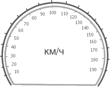
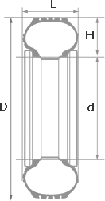
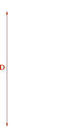

Когда изнашиваются заводские шины или просто хочется поставить другие колеса, то возникает вопрос: а какие размеры шин подойдут моей машине? Дело в том, что каждый автомобиль рассчитан под определенный диаметр колес и ширину протектора. Обычно, данная информация содержится на оборотной стороне крышки бензобака или в документах по эксплуатации. Если отклониться от этих типоразмеров больше чем на 2-3 процента, то расход бензина вырастет, спидометр начнет врать, а в случае большой разницы вождение может стать просто опасным.Но как подобрать шины правильного размера, если на профиле написаны какие-то непонятные цифры? Не измерять же их линейкой, ей богу. Именно для этих целей и создан данный шинный калькулятор. Он позволяет определить разницу между шинами в сантиметрах. В частности, с помощью шинного калькулятора вы можете рассчитать и сравнить диаметр шины, ширину протектора, высоту профиля и окружность. Дополнительно, калькулятор определяет потенциальные различия в показателях скорости на спидометре, изменения клиренса и разницу в количестве оборотов на один километр (или милю).

10
20
30
40
50
60
70
80
90
100
110
120
130
140
150
160
170
180
190
/R
/R
Старый размер
Новый размер
Отклонения
L — Ширина шины, мм
H — Высота профиля, мм
d — Внутренний диаметр, мм
D — Внешний диаметр, мм
Шинный калькулятор – является инструментом для правильной замены установленных на автомобиле покрышек. Если вы решили изменить размеры шины данная программа поможет вам узнать, на сколько изменяются её внешние показатели, просчитать погрешность спидометра, следить за изменениями дорожного просвета.


Расчет ширины диска
/R
Параметры диска (в дюймах)
Диаметр (D):
Ширина (L):
минимальная (J)
максимальная (J)
При изменении параметров шин вам обязательно необходимо свериться с совместимостью ширины диска установленным на вашем автомобиле. Этот раздел программы – шинный калькулятор – покажет вам минимальные и максимальные показатели ширины диска подходящие под выбранный вами типоразмер покрышек
Подбор по автомобилю
Можно воспользоваться функцией "Подбор оптимальных вариантов шин и дисков по определенной марке и модели автомобиля" Для этого нужно перейти по ссылке "Подбор по авто" и выбрать нужную марку и модель транспортного средства. А так же год выпуска.